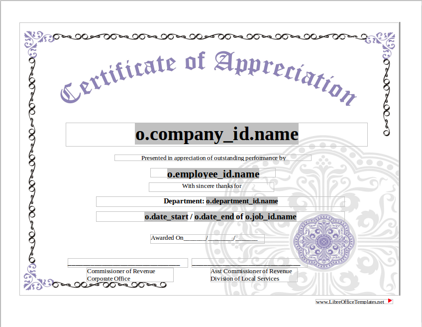
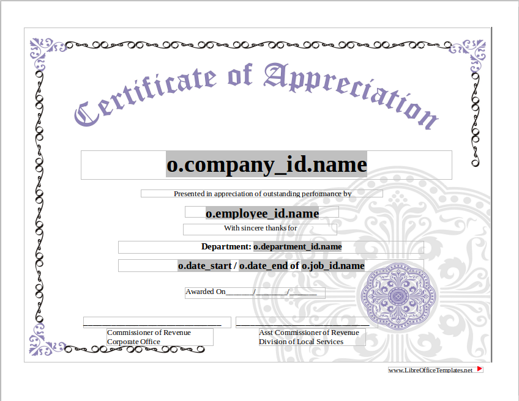
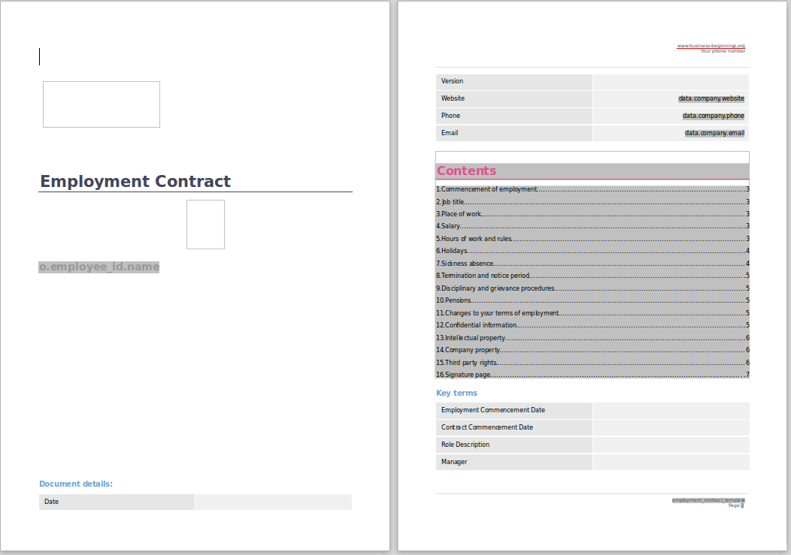
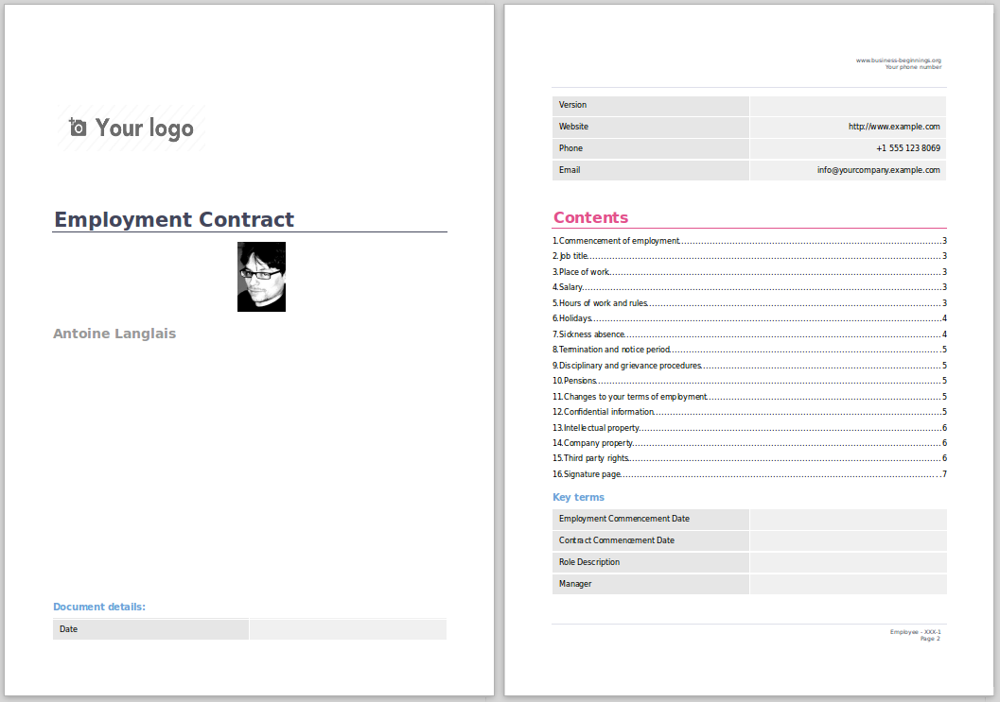

Certificate of appreciation
Template
Out File

Export data all objects odoo to LibreOffice output files odt, pdf, doc, docx, ods, rtf.
Ideal for creating contracts and other documents.
Certificate of appreciation
Template
Out File
Report contract
Template
Out File
*.odt Using the word processor OpenOffice or LibreOffice
Example templates in module report_extend_bf_examples.
Note: LibreOffice (Version: 4.4.6.3 or better). tested with LibreOffice write version: 4.4.6.3 or 6.0 (Optional for create templates).